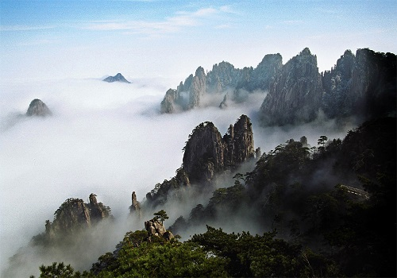
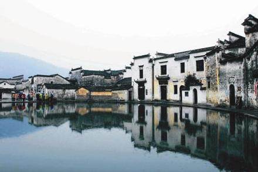
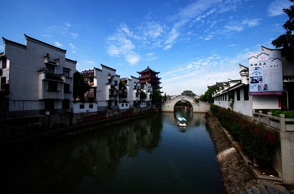
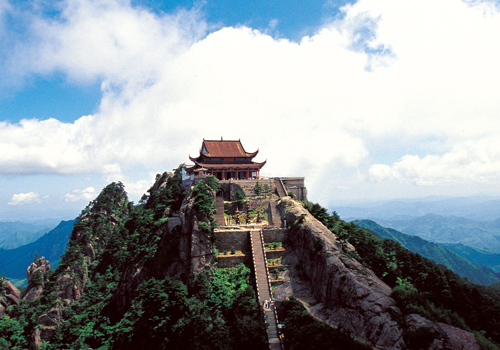
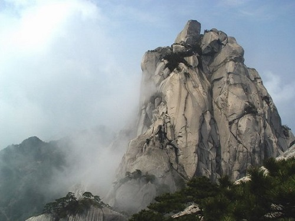

There are famous tourist attractions in Anhui. If you get time, Anhui is worth your visit.
Mt. Huangshan

Hong Cun Village

Hefei Sanhe Ancient Town

Mt. Jiuhua

Tianzhu Mountain Scenic Area

More travel information can be found here: Travel in Anhui